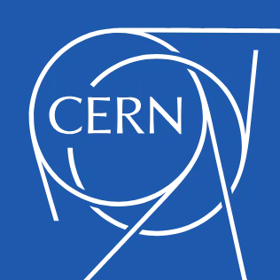

The World Wide Web(W3) aims to provide hypermedia information across a wide area on a global scale.
Everything there is online about W3 is linked directly or indirectly to this document, including an executive summary of the project, Mailing lists, Policy, November's W3 news, Frequently Asked Questions .

| A list of W3 project components and their current state. (e.g. Line Mode ,X11 Viola , NeXTStep , Servers , Tools , Mail robot , Library ) |